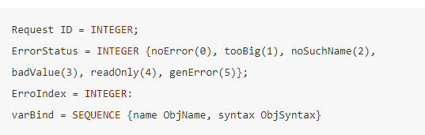

Capítulo 5 Administración de redes
La administración de redes es una parte fundamental de los sistemas integrados de gestión de sistemas de información. Con el enorme crecimiento en la variedad y número de equipos y redes como el ambiente mostrado en la figura 5.1, una administración centralizada resulta impensable. La integración de equipos heterogéneos impide la utilización de sistemas propietarios de bajo nivel.
La administración de redes representa el conjunto de funciones que permiten una adecuada explotación, mantenimiento, seguridad y seguimiento en la operación de la red.
Figura 5.1: Una red heterogénea
Para poder garantizar el acceso ubicuo a la información y servicios en las redes heterogéneas tendrá que haber una inversión considerable en tecnologías de gestión y monitoreo de redes y sistemas (NSM, network and systems management). Una mala estrategia de NSM es la razón típica por la que falla un esfuerzo de downsizing, así como por la que se perciben bajos incrementos en la productividad del personal no técnico.
En el viejo modelo de cómputo centralizado, los administradores debían preocuparse únicamente por el equipo central y unas cuantas terminales tontas. En la actualidad, el modelo está basado en estaciones de trabajo inteligentes, capaces de realizar muchas más tareas pero que al mismo tiempo necesitan más dedicación y tiempo para su instalación, configuración, evaluación y mantenimiento.
Estudios recientes (figura 5.2) sobre los costos incurridos en redes en Estados Unidos, muestran que el costo anual de administración de sistemas excede los costos de adquisición tanto de hardware como de software.
Figura 5.2: Retos en la gestión de TI por su evolución
5.1 Evolución de administración de sistemas
La evolución de los sistemas administrativos comienza con la administración tradicional del Mainframe y sus equipos asociados. A este ambiente de administración se le llamaba de invernadero (Glass house). Durante más de treinta años, los responsables de los sistemas informáticos debían gestionar todos sus sistemas en el centro de cómputo. En grandes centros, esto implicaba decenas de herramientas distintas, todas ellas especializadas en cada una de las plataformas disponibles.
Conforme fue evolucionando el ambiente de cómputo, lo fue haciendo su gestión, transitando hacia un modelo distribuido donde se debía considerar la administración de:
Minicomputadoras
Estaciones de trabajo
Computadoras personales departamentales
A estos sistemas de cómputo hoy deben agregarse equipos portátiles como laptops, tabletas y hasta teléfonos inteligentes.
Además de los equipos terminales, la gestión debe incluir, por supuesto, los equipos de interconexión, que es el tema central de este capítulo.
De acuerdo al marco de referencia OSI, los componentes básicos de administración de redes se conforman por cinco subsistemas:
Gestión de fallas (Fault Management)
Gestión de configuración (Configuration Management)
Gestión de seguridad (Security Management)
Gestión de rendimiento (Performance Management)
Contabilidad de recursos (Accounting Management)
En el modelo OSI, estos subsistemas ofrecen un conjunto de servicios: Common Management Information Services, CMIS, con ayuda del protocolo de nivel de aplicación Common Management Information Protocol, CMIP.
5.1.1 Gestión de fallas
La gestión de fallas debe ser preferentemente proactiva, es decir, se debe tratar de identificar tempranamente una condición potencial de falla antes de que ésta se manifieste. Se sigue un modelo de gestión activa en el que un mecanismo de sondeo solicita información a los dispositivos administrados.
Debe haber un compromiso entre la precisión de la información adquirida y la cantidad de tráfico inyectado; también deben contemplarse canales alternos para recabar información de los dispositivos en caso de fallos en la red.
También debe definirse con claridad, como se mencionó al presentar el modelo de administración de riesgos, que es importante definir qué fallas se desean gestionar y cuáles no. Debe considerarse que hay muchos tipos de fallos que ocurren raramente, pero sobre todo tienen un impacto bajo en el desempeño de la red, por lo que quizás no merece la pena incluirlas en el modelo (automatizado) de gestión de fallas.
En el proceso de localizar y corregir problemas en la red, los tres pasos básicos son:
Identificar (pasiva o activamente) un comportamiento anormal de la red.
Aislar el problema; minimizar su impacto en el resto de la red. Tratar de reproducirlo para poder analizarlo.
Corregir el problema.
5.1.2 Gestión de configuración
La gestión de configuración tiene por objeto alinear la configuración de equipos a las políticas de operación definidas, simplificar su despliegue y minimizar errores durante este proceso. Para ello, es muy recomendable definir perfiles de usuarios con sus respectivos permisos para acceso a equipos y servicios de red.
Las gestión de configuración debe tomar en cuenta tanto el nivel físico como el nivel lógico de la red. En operación, este subsistema obtiene datos e información de la red y los utiliza para gestionar la configuración de los diferentes dispositivos. Para ello se debe:
Obtener información sobre la configuración actual de la red, incluyendo dispositivos instalados por el usuario (autodiscovery);
Utilizar dicha información y las herramientas (automatizadas) para modificar los dispositivos según se desee;
Almacenar información, mantener y actualizar el inventario y producir reportes. Este inventario debe incluir elementos como direcciones asignadas, hardware y software instalado, números de serie, localización física, capacidad, etcétera.
5.1.3 Gestión de seguridad
La gestión de seguridad no se limita a los mecanismos de seguridad (protocolos, mecanismos de encripción) sino a toda la política de seguridad que debe ser implementada en la organización, como la administración de contraseñas, responsabilidades de los usuarios, seguridad de acceso físico, entre muchos otros. En capítulos posteriores se tratará con más detalle este tema.
La protección de información importante se logra mediante la limitación en el acceso de los usuarios a hosts y dispositivos de red y mediante la notificación al administrador de red de intentos y violaciones de seguridad. Para realizar estos objetivos tenemos que:
Definir e identificar la información que será protegida.
Localizar los puntos de acceso a dicha información.
Asegurar dichos puntos de acceso mediante los mecanismos apropiados (encripción, filtrado de paquetes, Identificación de hosts e Identificación de usuarios).
Incluir seguridad física (control de acceso) de los dispositivos.
5.1.4 Gestión de rendimiento
El objetivo de la gestión de rendimiento es el garantizar que la red está dentro de los parámetros de operación definidos en la etapa de diseño, mediante el monitoreo de los dispositivos de red y sus enlaces asociados para determinar su utilización, niveles de error, etcétera. El monitoreo continuo permite una gestión proactiva de la red y ayuda a anticipar las extensiones y cambios necesarios cuando la infraestructura de comunicaciones empieza a rebasar sus condiciones óptimas de operación.
La gestión de rendimiento puede ser extremo a extremo y por componente. Deben identificarse las métricas a utilizar para evaluar el rendimiento. Para lograr los objetivos de la gestión de rendimiento es recomendable:
Reunir información de la utilización actual de dispositivos y enlaces, como tiempo de respuesta, ocupación media de las colas, disponibilidad (MTBF), etcétera.
Analizar la información relevante par discernir si hay altos niveles de utilización.
Fijar umbrales de utilización.
Valerse de herramientas de simulación para determinar cómo la red puede ser alterada para maximizar su rendimiento.
5.1.5 Contabilidad de recursos
La gestión contable o auditoría de recursos almacena y procesa datos referentes al consumo de los recursos de la red. Esta información puede ser utilizada para fines de tarificación y también como apoyo para planear la capacidad y/o detectar fallas de la red. En esencia, la gestión contable implica:
Medir la utilización de los recursos de la red para determinar su correcta distribución.
Definir cuotas de uso utilizando métricas adecuadas.
Determinar y reportar costos y utilización, para cobrar a los usuarios por el servicio.
5.2 Protocolos de administración
Existe un conjunto amplio de protocolos y herramientas propietarias para la gestión de redes y sistemas informáticos, pero la admistración de redes se concentra en dos grandes categorías: el enfoque de administración de OSI y el de IETF.
5.2.1 Modelo de administración OSI
En el modelo de administración OSI cada capa cuenta con una "entidad de administración de capa" (LME, layer management entity) que se comunica con la "entidad de aplicación de administración del sistema" (SMAE, system management application entity). Las SMAE se comunican entre sí a través de CMIP como se muestra en la figura 5.3.
Figura 5.3: Modelo de gestión OSI
Las primitivas del modelo definen los servicios ofrecidos (CMIS):
Set (manipular información de administración)
Action (ejecutar un comando, p.e., reinicio)
Get (leer información de administración)
Create (crear una nueva instancia de un objeto)
Delete (eliminar una instancia de un objeto)
Event-report (reportar eventos anormales)
CMIS está basado en un modelo orientado a conexión. Todos los servicios se ofrecen con confirmación, aunque Set, Action e Event-report también pueden ofrecerse sin confirmación.
Observe que en este modelo, para que pueda haber intercambio de información, toda la pila de protocolos debe estar funcionando.
5.2.2 Modelo de gestión IETF
A los inicios del desarrollo de Internet, se implementó el protocolo ICMP (Internet Control Message Protocol) para depuración, control y monitoreo de errores del protocolo IP. Una de sus aplicaciones más conocidas es la herramienta PING que permite verificar si un dispositivo determinado es "alcanzable".
Claramente, este tipo de mecanismos es insuficiente para la administración de redes cada vez más complejas. A mediados de los años 80 se reconoció la necesidad de incorporar un mecanismo de administración de red. Se consideraba que las propuestas de OSI para gestión debían ser incorporadas a Internet, pero OSI avanzaba muy lentamente, por lo que se optó en 1987 por seguir dos estrategias paralelas:
A corto plazo se desarrollaría un protocolo sencillo basado en SGMP (Simple Gateway Monitoring Protocol), un protocolo utilizado para depurar la operación de enruteadores. Este protocolo es SNMP (Simple Network Monitoring Protocol). La idea de base es: el impacto de añadir administración de red debe tener un efecto mínimo en los nodos administrados
A largo plazo se debía soportar CMIP sobre TCP/IP: CMOT
Como se consideraba que las dos estrategias eventualmente deberían converger y, de hecho, se esperaba que la dominante fuera CMOT, se decidió definir un marco de referencia común inspirado en las ideas y las mejores prácticas de OSI.
El marco de referencia común consistió en la definición de una Estructura de Información Común (SMI, Structure of Management Information) y un conjunto de elementos de administración: la base de información de administración (MIB, Management Information Base). En otras palabras, el modelo de administración en IETF se divide en dos partes:
El formato de los mensajes (SMI) y el protocolo de transferencia entre agentes y administrador: SNMP
La información que se administra: MIB
En general, los dispositivos tienen agentes encargados de colectar la información que les corresponde (las variables MIB) y el administrador contacta a los agentes para recabar esta información. Ver figura 5.5. Siguiendo la idea de no sobrecargar los nodos, los agentes son entidades simplificadas y la inteligencia es desplazada a la consola de administración.
Figura 5.4: Modelo de gestión IETF
5.2.3 Simple Network Management Protocol
Especifica cómo debe ser la comunicación entre la estación de administración y los agentes para intercambiar información sobre las variables MIB en cuestión. En su primera versión (SNMPv1) se definen únicamente cinco comandos:
- Get-request
-
La consola solicita el valor de una variable
- Get-next-request
-
Solicita el valor de la siguiente variable. Se utiliza para recorrer tablas
- Get-response
-
El agente devuelve el valor solicitado
- Set-request
-
La consola establece el valor de una variable
- Trap
-
El agente reporta alguna anormalidad
La primera versión trabaja sobre UDP; en las últimas versiones, el protocolo de transporte puede ser TCP o UDP. Los comandos get, get-next y set esperan contactar al agente en el puerto 161; el comando trap espera contactar al administrador en el puerto 162.
Las anormalidades reportadas con el comando trap están claramente definidas en SNMP aunque pueden extenderse. Como ejemplos de las anomalías reportadas tenemos:
Reinicio del sistema.
Enlace caído / restablecido.
Autentificación fallida.
Pérdida de vecino EGP.
Para los administradores de redes, SNMP se mantiene oculto detrás de paquetes de software conocidos como consolas de administración. La consola manda comandos y recibe respuestas de los agentes que se encuentran en los dispositivos administrados. Como se muestra en la figura 5.5, los agentes se encargan de recabar información sobre objetos determinados, los cuales son un subconjunto de la Base MIB.
Figura 5.5: Elementos de SNMP
Para que un administrador pueda interactuar con un agente, deben pertenecer a la misma comunidad. Este concepto permite que en redes con muchos dispositivos la carga de la gestión se pueda distribuir entre varios administradores. En la figura 5.6 se aprecian dos comunidades, public y public2.
En su empeño por mantener los agentes simples, SNMPv1 ignora el problema de seguridad de acceso. El identificador de comunidad es un campo en el paquete SNMP que viaja sin encriptar por la red.
Figura 5.6: Comunidades SNMP
5.2.4 Base de datos de información de administración (MIB)
Se trata de una estructura jerárquica en la que se definen los identificadores de los objetos (llamados las variables MIB) que pueden administrados a través de SNMP. Las variables MIB están organizadas en una estructura arborescente basada en el árbol de identificadores de objetos (OID, Object Identifier definido en conjunto por OSI y por la ITU. En la figura 5.7 se muestran las diez categorías de variables definidas en el RFC 1213, que corresponden a la segunda versión de variables, las variables MIB-II, definida cuando se separan, en 1989, los grupos CMOT y SNMP.
Figura 5.7: Variables MIB-II en el árbol de identificadores de objetos
Un objeto o variable MIB-II tiene un identificador único recorriendo el árbol desde la raíz hasta la hoja que lo representa. El primer nivel del árbol tiene tres ramas: los objetos definidos por ISO (1), los definidos por ITU -anteriormente CCITT- (2) y los definidos conjuntamente por ISO e ITU. Abajo de ISO encontramos la rama que corresponde a las organizaciones (org, 3) y dejado de ésta, hay una rama para el Departamento de Defensa de Estados Unidos (dod, 6).
Así se sigue recorriendo el árbol hasta llegar al objeto deseado. Por ejemplo, el identificador 1.3.6.1.2.1.1.1 corresponde a la variable iso.org.dod.internet.mgmt.MIB-II.system.sysDescr. Una instancia de esa variable, es decir, el valor actual de la variable, es gestionado por el agente del dispositivo y se puede acceder a él agregando un 0 al OID de la variable, en este caso, 1.3.6.1.2.1.1.1.0.
De manera similar, el OID 1.3.6.1.2.1.4.3.0 hace referencia a la instancia de la variable IpInReceives bajo la rama IP, que lleva el conteo de datagramas IP recibidos por el dispositivo.
Los valores para la mayor parte de las características listadas pueden almacenarse en un solo entero. Sin embargo, MIB también define estructuras más complejas. Por ejemplo, la variable IpRoutingTable se refiere a la tabla de ruteo del ruteador.
Dado que la administración de la red involucra muchos equipos heterogéneos, los responsables del protocolo establecieron normas muy específicas sobre cómo definir, identificar y representar las variables. El conjunto de estas normas es lo que se conoce como la estructura de la información de administración (SMI, Structure of Management Information).
SMI indica que los objetos deben ser identificados en el árbol OID y deben ser definidos utilizando un subconjunto de la notación ASN.1 (Abstract Syntax Notation v1). ASN.1 es un metalengauje que permite representar de manera universal una información (tipos básicos y estructuras de datos complejas) y establece la forma en que debe ser codificada esta información para el intecambio de datos, es decir, la sintaxis de los objetos.
Para SNMP, se eligió BER (Basic Encoding Rules) como el formato de codificación. Como se muestra en la figura 5.8, la codificación BER tiene tres campos: El identificador del tipo de objeto, la longitud del objeto y su valor.
Figura 5.8: Reglas de codificación BER
Como se muestra en la figura 5.8, los primeros dos bits indican si el objeto es un tipo de datos "universal", es decir, definido en ASN.1, si depende de la aplicación, si está definido en un contexto determinado (por ejemplo, en el contexto de la definición de SNMP) o si es un objeto definido por el usuario. El tercer bit indica si el objeto es un tipo básico, como un entero, o uno complejo, como una estructura de datos. Los cinco bits restantes de la etiqueta indican de qué objeto se trata dentro del dominio definido (universal, aplicación, etc.).
Si la longitud del objeto es menor a 127 bytes, ésta ocupa un solo campo (el segundo octeto de la codificación); si es mayor, el bit más significativo es "1" y los demás bits indican el número de octetos subsecuentes que representan la longitud del objeto.
En la tabla 5.1 se muestran algunos de los tipos de datos universales definidos en ASN.1 y se resaltan en negritas aquellos utilizados en la definición de SNMP.
| Clase | Tipo | Descripción |
|---|---|---|
| 1 | BOOLEAN | Valores cierto o falso |
| 2 | INTEGER | Números enteros positivos o negativos |
| 3 | BIT STRING | Serie de bits sin representación específica |
| 4 | OCTET STRING | Cadena de caracteres |
| 5 | NULL | Entrada sin valor |
| 6 | OBJECT IDENTIFIER | Identificador de un objeto en el árbol OID |
| 7 | OBJECT DESCRIPTOR | Cadena que describe el objeto |
| 8 | EXTERNAL | Tipo definido en otro módulo |
| 9 | REAL | Número en punto flotante |
| 10 | ENUMERATED | Lista de enteros |
| 16 | SEQUENCE OF | Conjunto de elementos |
| 17 | SET; SET OF | Lista no ordenada de elementos |
Por su parte, la tabla 5.2 los objetos definidos en el contexto de SNMPv1 y que corresponden a los PDU del protocolo.
| Clase | Tipo.de.Dato |
|---|---|
| 0 | GetRequest |
| 1 | GetNextRequest |
| 2 | GetResponse |
| 3 | SetRequest |
| 4 | Trap |
5.2.4.1 Formato de mensajes SNMP (v1)
En la definición SMI el formato de los mensajes SNMPv1 tiene la siguiente estructura:

El protocolo está definido en el RFC 1157. Una sección de la definición se muestra a continuación:
De esta manera, un mensaje SNMP versión 1 está formado por una secuencia con cuatro campos: versión (tiene el valor 1), comunidad y cualquiera de cinco opciones para el PDU. El formato de los PDU para GetRequest (0), GetNextRequest (1), SetRequest (2) y GetResponse (3), es el mismo; lo único que cambia es el identificador de tipo de PDU con los valores indicados en paréntesis.
En la figura 5.9 se muestra codificado un mensaje GetRequest de la variable sysDescr. El primer octeto es 0x30 hexadecimal (0011 0000 binario). Los dos primeros bits indican que es un tipo de dato universal, el tercero que es un tipo complejo y los últimos cinco (con valor 10000 binario, es decir, 16) nos dice que se trata de un SEQUENCE según lo indica la tabla 5.1. Esto es consistente con el formato del mensaje definido en el RFC 1157.
Como el mensaje está codificado con reglas BER, el segundo octeto, 0x29 (41 decimal) muestra la longitud de esa estructura y los campos subsecuentes indican su valor.
Figura 5.9: Mensaje SNMP, PDU GetRequest con codificación BER
Como se trata de una solicitud, los campos errorStatus y errorIndex tienen un valor de cero. Para el campo OID hay un tratamiento especial: dado que el primer dígito sólo puede ser 0,1 ó 2 y el segundo es menor a 39, estos dos se combinan en un solo octeto siguiendo la fórmula \(40*A + B\), donde A es el primer dígito y B es el segundo.
5.2.4.2 SNMPv2 y v3
SNMPv1 (RFC 1157) no toma en cuenta la seguridad. Además, el acceso a las variables mediante los PDU GetRequest y GetNextRequest es muy ineficiente si se desea recabar mucha información.
La segunda versión introduce mejoras en las áreas de:
Rendimiento, Se agregan los PDU Get-bulk, Inform y se definen contadores con un tamaño mayor a 64 bits, entre otras).
Seguridad. Desgraciadamente, los mecanismos para implementar seguridad en la segunda versión podían ser incompatibles entre sí, por lo que al final del día se tuvo que abandonar.
Comunicaciones administrador-administrador.
La tercera versión, SNMPv3 (RFC 2570-2576), tiene la categoría de Proposed Standard. es una profunda revisión del protocolo en la que se retienen las mejores propuestas de la versión 2 y se aclaran las confusiones para asegurar los mensajes mediante algoritmos de cifrado y autenticación. También se da flexibilidad para que el protocolo de transporte pueda ser UDP o TCP.
5.3 RMON
Si cada dispositivo que es administrado con SNMP está conectado a una red, entonces puede contribuir al monitoreo activo de sus segmentos de red local como si se tratara de un analizador de protocolos. Eso es lo que se busca con RMON (Remote monitoring), una extensión a las variables MIB definida en el RFC 1757.
Como se muestra en la figura 5.10, las funciones de monitoreo se dividen en diez grupos y permiten el monitoreo de topologías Ethernet y Token Ring. El agente se instala en sondas (probes).
La segunda versión, RMON2, agrega objetos para el monitoreo de tráfico de red por encima de la capa de MAC.
Figura 5.10: Árbol OID para variables RMON
5.4 Administración de sistemas con SNMP
Como se comentó al inicio de este capítulo, SNMP puede ser utilizado para gestionar dispositivos y equipos terminales que estén conectados a la red aunque no formen parte de su operación. Para ello, sólo es necesario que se definan las variables MIB correspondientes en el árbol OID, típicamente debajo de la rama para enterprises. Por supuesto, los dispositivos deben tener los agentes dedicados a monitorear y actualizar los contadores relacionados con esas variables.
Por ejemplo, con las extensiones MIB privadas, la estación de administración puede consultar al agente SNMP de una impresora y detectar el nivel de tóner o de hojas en la bandeja de impresión. De la misma forma, podría consultar un agente en un servidor para conocer la ocupación media de memoria principal, el espacio disponible en disco, el número de procesos activos, entre muchos otros parámetros.
5.5 Problemas
Problema 5.1 De acuerdo al modelo de OSI, la gestión de la red se divide en cinco componentes. Descríbalos brevemente.
Problema 5.2 Seleccione las respuestas correctas
SNMP define [_____] que se enviarán del administrador al agente y viceversa
- el formato de los paquetes
- la codificación de los paquetes
- el número de paquetes
- ninguno de los anteriores
- el formato de los paquetes
Un agente es una computadora en la que se ejecuta el proceso [_____] de SNMP
- cliente
- servidor
- cliente y servidor
- ninguno de los anteriores
- cliente
SMI enfatiza tres atributos para manipular un objeto: [_____]
- nombre; tipo de dato; tamaño
- nombre; tamaño; método de codificación
- nombre; tipo de dato; método de codificación
- ninguno de los anteriores
- nombre; tipo de dato; tamaño
El OID de todos los objetos administrados por SNMP comienza por: [_____]
- iso.org.dod.internet.management.mib.
- iso.org.dod.internet.management.mib-II.
- iso-itu.std.dod.internet.management.mib-II.
- ninguna de las anteriores
- iso.org.dod.internet.management.mib.
Para definir sus tipos de datos, SMI utiliza y extiende las definiciones de objetos establecidas en [_____]
- ASN.1
- BER
- SNMP
- ninguna de las anteriores
- ASN.1
SMI se basa en el estándar [_____] para codificar la información que será transmitida por la red
- MIB
- ASN.1
- BER
- ninguna de las anteriores
- MIB
El PDU GetReques se envía del [_____] para obtener el valor de una variable o conjunto de variables
- cliente al servidor
- servidor al cliente
- servidor a la red
- ninguna de las anteriores
- cliente al servidor
Problema 5.3 ¿Qué valor tiene el entero codificado en BER 02 01 08?
Problema 5.4 Describa brevemente las operaciones Get, Get Next, Trap e Inform de SNMP
Problema 5.5 Mencione los principales cambios propuestos en SNMPv3 respecto de SNMPv1
Problema 5.6 Codifique el siguiente segmento utilizando reglas BER. Suponga que los identificadores de los tipos de datos son: (1) Boolean, (2) integer, (9) real, (16) sequence, (28) character string. Suponga también que los enteros son de longitud variable y que los números de punto flotante son siempre de 8 bytes.